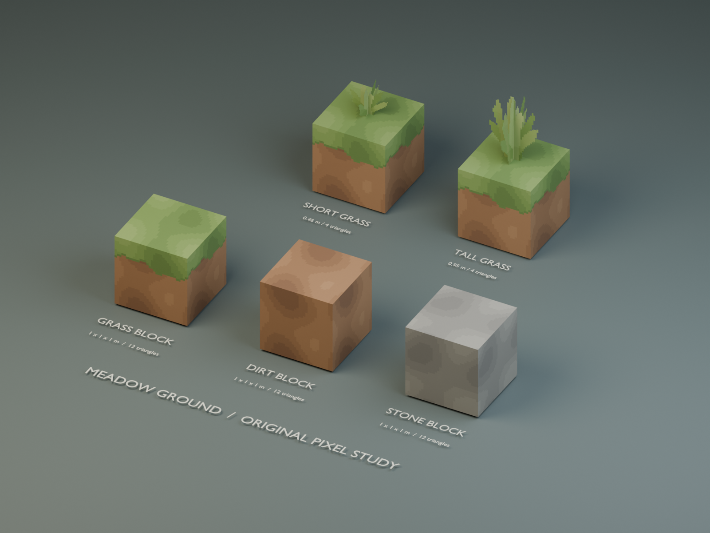
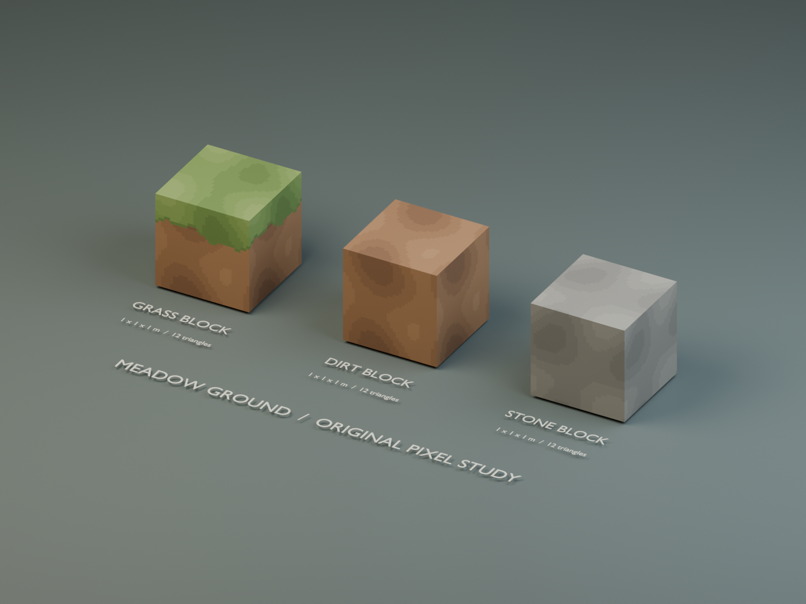
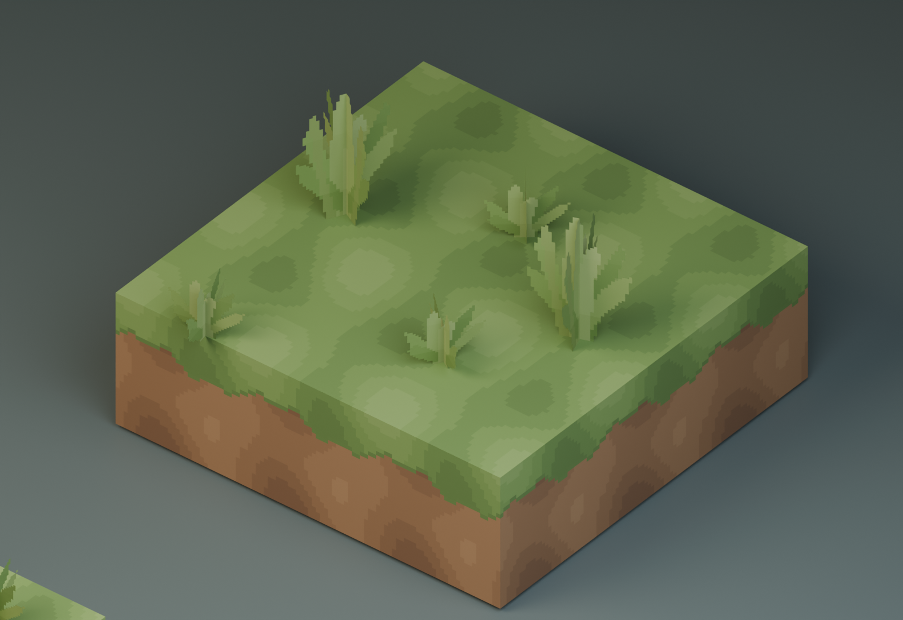

Blender study · Awaiting human review
Meadow / Ground family
5 original, lightweight assets inspired by the soft color masses and blocky shapes of the supplied Dungeons II Style resource pack. The textures and blade silhouettes were authored independently. This pass is prepared for Blender review only. Grass, dirt and stone blocks share the same 1 × 1 × 1 m dimensions.
Exactly 5 assetsShared original atlasNearest pixel filteringCutout grass cardsNo Godot integration

Grass block
12 triangles
1.00 × 1.00 × 1.00 m · width / height / depth
ENV_GrassBlock_DI_Study_V1Native GLB ↗
Dirt block
12 triangles
1.00 × 1.00 × 1.00 m · width / height / depth
ENV_DirtBlock_DI_Study_V2Native GLB ↗
Stone block
12 triangles
1.00 × 1.00 × 1.00 m · width / height / depth
ENV_StoneBlock_DI_Study_V2Native GLB ↗
Ground grass
4 triangles
0.58 × 0.46 × 0.58 m · width / height / depth
ENV_Grass_DI_Study_V1Native GLB ↗
Tall grass
4 triangles
0.72 × 0.95 × 0.72 m · width / height / depth
ENV_TallGrass_DI_Study_V1Native GLB ↗
Scale, silhouette and tiling

Block comparison · equal cube dimensions and coherent materials.
Preserved V1 grass tile test · 3 × 3 grass blocks with small and tall grass.What carries through from the reference
Warm earthy dirt, broad restrained pixel clusters, a clear green cap, and chunky stepped grass. The new palette, patch layout, cap boundary and grass negative spaces are distinct. The authored study supplies its own coherent meadow colors. Only texture references for these assets were inspected; no matching custom models were present.
Source reference board · comparison only
 Source images are displayed solely for comparison and are not used in the authored asset materials or GLB exports.
Source images are displayed solely for comparison and are not used in the authored asset materials or GLB exports.Review files
Open the Blender file · Asset manifest
Export previews have bottom-center origins, metre scale and glTF Y-up coordinates. The saved Blender scene separates reusable native assets from linked showcase instances and labels. Production game files and previous studies remain untouched.
ARTISTIC STATUS: AWAITING HUMAN REVIEW